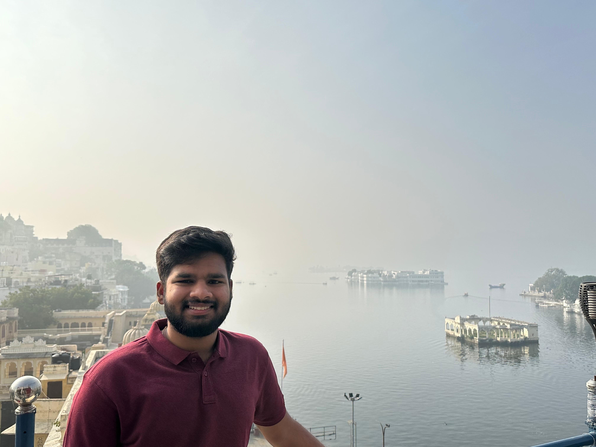

|
Hello! I am currently pursuing a Master's degree in Computer Science at the Hasso Plattner Institute (HPI), University of Potsdam. I previously graduated with a Bachelor's of Technology (B.Tech) from SRM Institute of Science and Technology, Chennai (SRM IST) supervised by Prof. Dr. Athira M. Nambiar at Center for AI in Computer Vision, where I focused on vision models, learning methodologies and reasoning. My main research interest lie in the areas of computer vision and deep learning. Particularly focused on learning methods for vision models, label-efficient (Semi-Supervised/ Unsupervised /Self-Supervised ) approaches that can independently perform iterative self-improvement and world models. However, I am always open to new ideas and collaborations in related fields. This website gives you an overview of my recent research and history. Email / CV / LinkedIn / Google Scholar / Github |
 |


|
|
|
08/2025 |
Our Paper on Unsupervised Continual Learning got selected for Spotlight Presentation at ECAI 2025 . |
|
06/2025 |
Paper on Unsupervised Continual Learning accepted at ECAI 2025 , arxiv. |
|
05/2025 |
Received Outstanding Research Contribution Award 2025, SRM IST! |
|
04/2025 |
Paper on Precognitive Uncertainty-aware Chain-of-Thought (CoT) accepted at CVPR Precognition Workshop 2025 , arxiv |
|
09/2024 |
Our work on Active Learning is accepted at ICPR'24! |
|
For the up-to-date publication list, please visit the Google Scholar page.
|
Reviewer: TMLR, ICCV (MCL Workshop 2025, XAI Workshop 2025), ICML 2025, ICML LatinX Workshop 2025, BMVC 2025.
|

{kind=link}